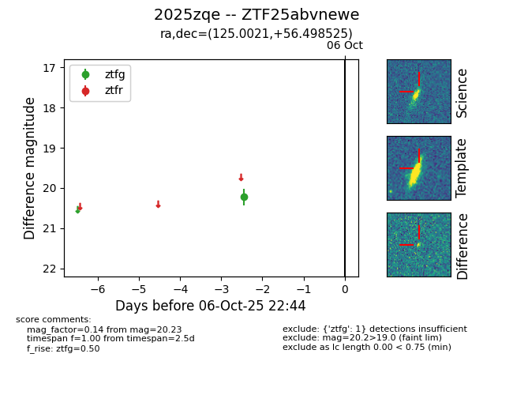

FINK: ZTF25abvnewe
Lasair: ZTF25abvnewe
ALeRCE: ZTF25abvnewe
TNS: 2025zqe
YSE: 2025zqe
ZTF25abvnewe (ztf,fink)
2025zqe (tns,yse)
equatorial (ra, dec) = (125.0021,+56.49853)
galactic (l, b) = (161.2355,+34.42909)

last ztfg=20.23
1 ztfg detections